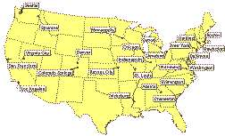

|
That Samuel L. Clemens was the greatest American humorist of his age nobody will deny. Posterity will be left to decide his relative position, in letters among the humorists of English literature. It is certain that his contemporary fame abroad was equal to his fame at home. All Europe recognized his genius, the English people appreciated him at his own worth, and the University of Oxford honored him with a degree. His writings commanded a higher price in the market than those of any other contemporary whose career was solely devoted to literature. His "public" was of enormous extent. From "The Jumping Frog" to the "Diary of Adam" everything that came from his pen was eagerly read and heartily enjoyed by multitudes. Much that he wrote has already been forgotten, inevitably, and in spite of definitive editions and the admirably practical management of his business in the later years of his career. But nearly all that Jonathan Swift, Fielding, Sterne, and Smollett wrote has been forgotten, though their fame, resting on a few books, still lives. Artemus Ward, Mark Twain's greatest predecessor as a National jester, is now little more than a name. Nasby belonged exclusively to the Reconstruction period. For any American humorous writer it would be fit to compare with Mark Twain we must go back to Washington Irving. But the author of Knickerbocker's ironical history and the Sleepy Hollow legend did not surpass, in those denotements of the humorous genius, the author of "The Adventures of a Cub Pilot on the Mississippi" and "Huckleberry Finn." Indeed, it is hard to say that Irving ever surpassed Clemens. Without belittling the first great American prose writer we are compelled to doubt if posterity will name him in the same breath with the humorist who has just passed away. The "Innocents Abroad" and "A Tramp Abroad" are likely to be remembered among the great travel books of all time. Full of the audacity, the wild exaggeration and violent contrasts which distinguish the National humor, they are equally remarkable as the veracious record of fresh impressions on a fertile and responsive mind. Mr. Clemens's more serious works, such as "The Prince and the Pauper," an incursion into the field of historical romance, "A Yankee at the Court of King Arthur," and "Joan of Arc," have been read by multitudes with great delight. He has been quoted in common conversation oftener, perhaps, than any of his fellow-countrymen, including Benjamin Franklin and Lincoln. He has been honored by misquotations, too, and the humorous sayings of the ancients have been attributed to him, though he never borrowed. His wit was his own, and so was his extravagance, and his powers of observation never failed him. We have called him the greatest American humorist. We may leave it an open question whether he was not also the greatest American writer of fiction. The creator of Mulberry Sellers and Pudd'nhead Wilson, the inventor of that Southwestern feud in "Huckleberry Finn," which, with all its wildly imaginative details, is still infused with rare pathos, has certainly an undying vitality. An emotional and quite unconventional sort of man, Clemens was, whose early life was a hard struggle for existence. He obtained his education where he could get it. Presumably his faults were as large as his merits. Intellectually he was of Herculean proportions. His death will be mourned, everywhere, and smiles will break through the tears as remembrance of the man's rich gift to his era comes to the mourners' minds. However his work may be judged by impartial and unprejudiced generations his fame is imperishable. |